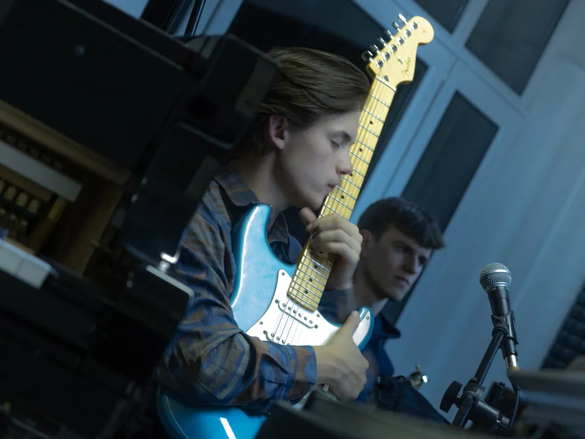

Maxmilián Kocek
Zpěv a kytara
Čau! Já jsem Maxmilián Kocek. Můžete mě znát jako nekonečného panice ze Sex O’clock nebo jako spartakiádního vraha. Ale o herectví tady psát nechci, protože hudbou si plním úplně jiné sny. Mish Mash je pro mě radost, únik, učení, inspirace, sebezdokonalování a ještě mnohem víc.
Když jsem před 6 lety poznal Šimona Váhalu, bylo mi jasné, že toto přátelství neskončí jenom na hodinách angličtiny na konzervatoři, a taky se tak stalo. Konečně jsem našel někoho, s kým můžu tvořit hudbu, i když tomu skoro vůbec nerozumím. Se Šimonem jsme našli zbytek kapely a takovou dávku energie, talentu a kreativity v tomhle oboru jsem ještě nezažil. Díky Mish Mash se mohu jako člověk rozvíjet a učit se v oboru, který pro mě byl docela neznámý.